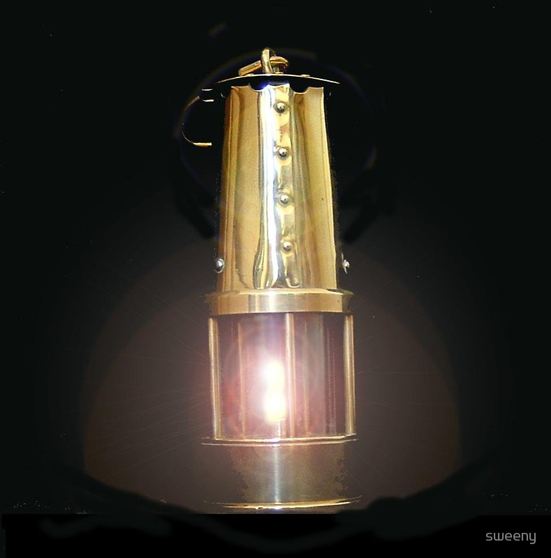

L'amico Marco mi ha recentemente invitato ad assistere ad una bella (quanto inconsueta!) conferenza sulla "Breve storia delle lampade da minatore"... ghiotta occasione alla quale ho dovuto con rammarico rinunciare.
L'oggetto "lampada da minatore" può rimandare il pensiero sai a che cosa?
A Penzance, sperduto paesello della Cornovaglia!
E perchè mai? Perchè qui è nato un genio, il Genio della Lampada, che con una insignificante reticella ha salvato la vita non a migliaia, ma ad un'infinità di lavoratori.
Mmmm, oggi sento odore di puntata biografica...
Spegni il bunsen e metti via gli alambicchi!
Andiamo a documentarci un po' e poi parliamo come viene viene sulle vicende di un Padre della scienza.
---°°°OOO°°°---
Nel 1778, la moglie del falegname di questa sconosciuta località (Penzance) mette al mondo il piccolo Humphry, destinato a diventare uno degli scienziati più celebri della sua epoca.
Humphry (che faceva Davy di cognome), ragazzo brillante con una mente curiosa come si conviene ad uno che aspiri ad un grande futuro, studia grazie al patrocinio di persone illuminate e impara tutto ciò che a fine '700 si imparava: materie classiche, matematica, elettricità, magnetismo, medicina e soprattutto sperimentazione pratica.
(Da qualche parte lo si fa ancora...).
A diciannove anni (allora si era precoci!) gli viene in mano nientemeno che il libro del povero Laurent Lavoisier "Traité de Chimie Elémentaire"; dato che Humphry aveva imparato anche il francese, può ripetere alcuni degli esperimenti di Lavoisier e veder pubblicati i suoi risultati.
Altro colpaccio di fortuna fu l'incontro a Penzance con Gregory Watt (figlio del grande James), appena giunto dall'Università di Edimburgo dove aveva studiato chimica e geologia. I due diventano amici e così il nostro protagonista viene "introdotto" (a cosa servirebbero le conoscenze altrimenti?) presso eminenti scienziati, tra cui Boulton, Priestley, e un certo Thomas Beddoes, medico di primo piano a Bristol.
Costui aveva in progetto di allestire un grande Ospedale di Pneumatica, in cui vari gas sarebbero stati somministrati ai pazienti (nel senso letterale del termine...) per il trattamento di malattie varie e ipocondria.
A quei tempi quando non si sapeva cosa diagnosticare si diceva "-soffre di ipocondria".
Davy diventa assistente e si trasferisce a Bristol, trovando un ottimo laboratorio dove poter sperimentare a piacere.
Ora succede che tra le scoperte contemporanee di Joseph Priestley vi fosse un gas che lui che aveva nominato "gas di azoto deflogisticato" (ma che simpatico questo flogisto! Bisognerebbe parlarne!).
Nel 1799 Davy sperimenta con questo gas e lo ribattezza protossido di azoto (N2O).
L'inalazione sperimentale del gas da parte del giovane Humphry (si vede che gli piaceva sniffare) gli provoca uno stato di euforia, che darà origine al nome "gas esilarante" che l'N2O tutt'ora tenacemente mantiene.
Ma non è tutto: siccome anche gli scienziati hanno il mal di denti, in occasione di un attacco Humphry si accorge che l'N2O gli fa un effetto anestetico.
Ma che bella scoperta! Ecco il protossido di azoto diventare lo standard per l'esecuzione di lavori dentali in tutto il mondo.
E così il nostro Davy, poco più che ventenne, diviene ben noto negli ambienti scientifici e sociali.
Sua Eccellenza il conte di Rumford, Sir Benjamin Thompson, fonda nel 1800 la Royal Institution, col fine di promuovere le scoperte scientifiche e la loro applicazione industriale. Come Assistente in Chimica e Direttore del prestigioso laboratorio viene nominato... Humphry Davy!
Le sue abilità come oratore e presentatore impressionano il pubblico e subito dopo, nel 1802, il Nostro è stimato Professore di Chimica presso la prestigiosa istituzione.
Alcuni anni prima Luigi Galvani (sempre alle prese con le sue rane...) aveva mostrato la relazione tra alcune reazioni chimiche e la corrente elettrica, ma non solo: Alessandro Volta aveva nel frattempo inventato la pila, una fonte facilmente riproducibile di corrente.
Davy vede che il processo di Galvani può essere invertito e la pila di Volta lo aiuta.
Dice: se reazioni chimiche possono produrre una corrente elettrica, allo stesso modo una corrente elettrica può scindere i composti nei loro componenti!
E così, in una conferenza alla Royal Society nel 1806, Davy descrive il metodo di "elettro analisi" (elettrolisi) per scomporre l'acqua in idrogeno e ossigeno. Davy avvia da queste osservazioni una grande serie di esperimenti, che lo portano nel 1807 alla scoperta del potassio e del sodio metallici, preparati a partire dagli idrossidi. In seguito (e scusate se è poco!) prepara per elettrolisi di sali fusi gli elementi alcalino-terrosi magnesio, calcio, stronzio, bario!
Mica facile neanche oggi. Bel colpo Humphry!
Giusto duecento anni fa, si ritira dal suo incarico a tempo pieno per diventare professore onorario alla Royal Institution.
Questo gli dà più tempo per seguire i suoi interessi non solo nel campo della ricerca ma perfino nella pesca, nella poesia e in quant'altro... e perchè no, nelle attenzioni verso una ricca vedova di nome Jane.
Ma non smette di sperimentare: già giocando col pericolosissimo cloruro d'azoto NCl3 aveva perso temporaneamente la vista (Pierre Dulong, lo scopritore di questa sostanza, ci perdette definitivamente, oltre a un occhio, anche due dita...) e si prende un assistente, ma non si accontenta di uno qualsiasi, si sceglie Michael Faraday!
Davy decide di compiere un viaggio nel continente (accompagnato da Faraday) sia per andarsi a ritirare il Prix Napoleone in Francia, sia per visitare il sud Europa.
In Francia incontra il famoso chimico francese Joseph Gay-Lussac e il fisico Andre Marie Ampere.
- ma quanti attori famosi ci sono in questa storia?-
Ampere gli aveva chiesto aiuto riguardo un misterioso composto che faceva i fumi viola.
Davy sperimenta addirittura nella sua stanza d'albergo francese, producendo (si vede che non ne aveva avuto ancora abbastanza!) fumi ed esplosioni: la sostanza viene identificata come elemento iodio, scoperto casualmente nel 1811 da Courtois.
Per quanto riguarda le esplosioni in camera, visto che si parla di iodio, possiamo immaginare facilmente a cosa fossero dovute...
Giunto in Italia, visto che si trova nel Paese del sole, cosa fa? Concentra i raggi solari con una lente e sacrifica un diamante bruciandolo in una sfera di vetro piena di ossigeno, dimostrando che diamante e carbonio non sono altro che lo stesso elemento. Di chi era quel diamante? Non lo so.
Tornato in patria, in nostro Humphry si dà da fare per risolvere un problema pratico di enorme importanza, che gli conferirà gloria e riconoscenza perenne.
In quel tempo gli incidenti nelle miniere di carbone erano all'ordine del giorno, dato che il grisou (metano) mieteva migliaia di vittime in tutta Europa e in Inghilterra in particolare.
Osservato che l'accensione di un gas infiammabile non si propaga attraverso una reticella metallica sufficientemente fitta, Davy inventa la famosa "lampada di sicurezza" per le miniere, in sostanza una semplice lampada a olio con la fiamma protetta da un contenitore a rete, che impedisce l'esplosione del gas in galleria.
Il Nostro, con gran gesto di magnanimità non brevetta la sua lampada ma ne fa dono alla nazione (non solo alla nazione, ma soprattutto a tante di quelle che, senza la sua scoperta, sarebbero diventate future vedove...).
Nel 1829 Davy, in uno dei suoi tour europei, viene colpito da un ictus a Roma. Durante il viaggio di ritorno a casa Sir Humphry Davy muore a Ginevra, dove è sepolto.

---°°°OOO°°°---
Non ho potuto assistere alla conferenza sulle lampade da minatore, ma in compenso ho colto l'occasione per ripassarmi un po' di storia... qualcosina ho guadagnato lo stesso!
Ora, scusami Humphry, ti prendo virtualmente per mano e ti porto addirittura a partecipare al diciassettesimo Carnevale della Chimica (ospitato sul blog di Leonardo Petrillo Scienza e Musica): vedrai che ci sarà tanta gente che conosci!
1 commenti